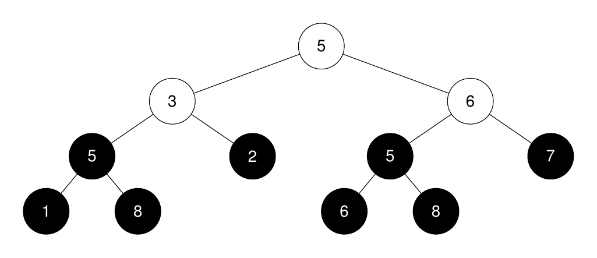
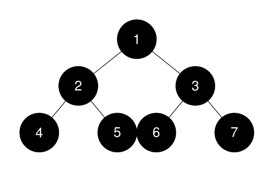
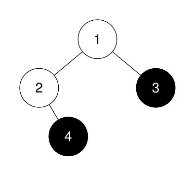

| Category | Difficulty | Likes | Dislikes |
|---|---|---|---|
| Algorithms | Medium | 142 | 14 |
google
You are given the root of a binary tree and an integer k.
Return an integer denoting the size of the kth largest perfect binary subtree, or -1 if it doesn't exist.
A perfect binary tree is a tree where all leaves are on the same level, and every parent has two children.
Example 1:
Input: root = [5,3,6,5,2,5,7,1,8,null,null,6,8], k = 2
Output: 3
Explanation:

The roots of the perfect binary subtrees are highlighted in black. Their sizes, in non-increasing order are [3, 3, 1, 1, 1, 1, 1, 1].
The 2nd largest size is 3.
Example 2:
Input: root = [1,2,3,4,5,6,7], k = 1
Output: 7
Explanation:

The sizes of the perfect binary subtrees in non-increasing order are [7, 3, 3, 1, 1, 1, 1]. The size of the largest perfect binary subtree is 7.
Example 3:
Input: root = [1,2,3,null,4], k = 3
Output: -1
Explanation:

The sizes of the perfect binary subtrees in non-increasing order are [1, 1]. There are fewer than 3 perfect binary subtrees.
Constraints:
[1, 2000].1 <= Node.val <= 20001 <= k <= 1024